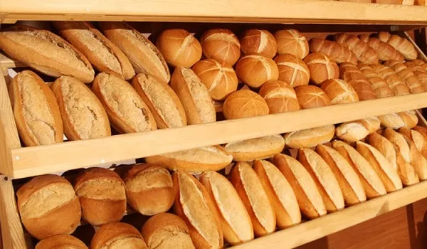

O pão integral é pão composto com farinhas integrais, ou seja, com farinhas completas às quais não foram retirados quaisquer constituintes. Durante o processo de moagem e em função do tipo de peneiração e do grau de moagem (farinha mais ou menos fina) obtêm-se farinhas mais ou menos completas. As farinhas obtidas por processos de moagem menos agressivos e sem qualquer tipo de peneiração são as verdadeiras farinhas integrais.
Para além da farinha, que pode ser de trigo, milho, batata, maisena ou qualquer outra fécula, e do adoçante (normalmente açúcar, mas pode ser um adoçante artificial, para os diabéticos poderem comê-lo), os bolos podem levar ainda um tipo de ingrediente aglutinante, geralmente ovos, mas que pode ser gluten ou amido, uma gordura que pode ser manteiga, margarina ou óleo, puré de fruta e um líquido, que pode ser leite, água ou sumo de frutos. Na maior parte das vezes, a massa para bolos leva aromatizantes, como a casca de limão ralada e levedura ou fermento. Podemos chamar-lhe bolo assim que a massa concluir a sua cozedura.
Estamos localizado em: Rua Ari Fontenele, 294
Funcionamento:
Segunda à Sexta: 06hrs às 22hr
Sabado: 07hr às 21hr
Domingo: 07hr às 20hr